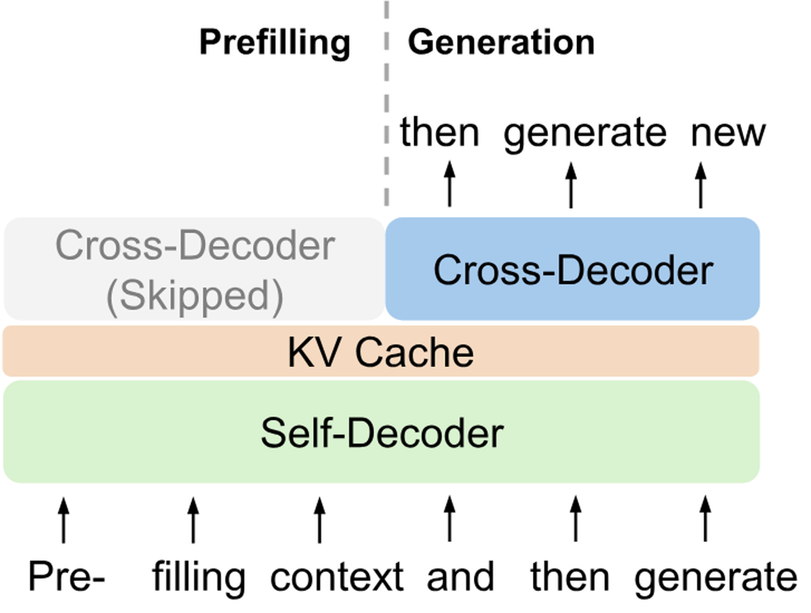
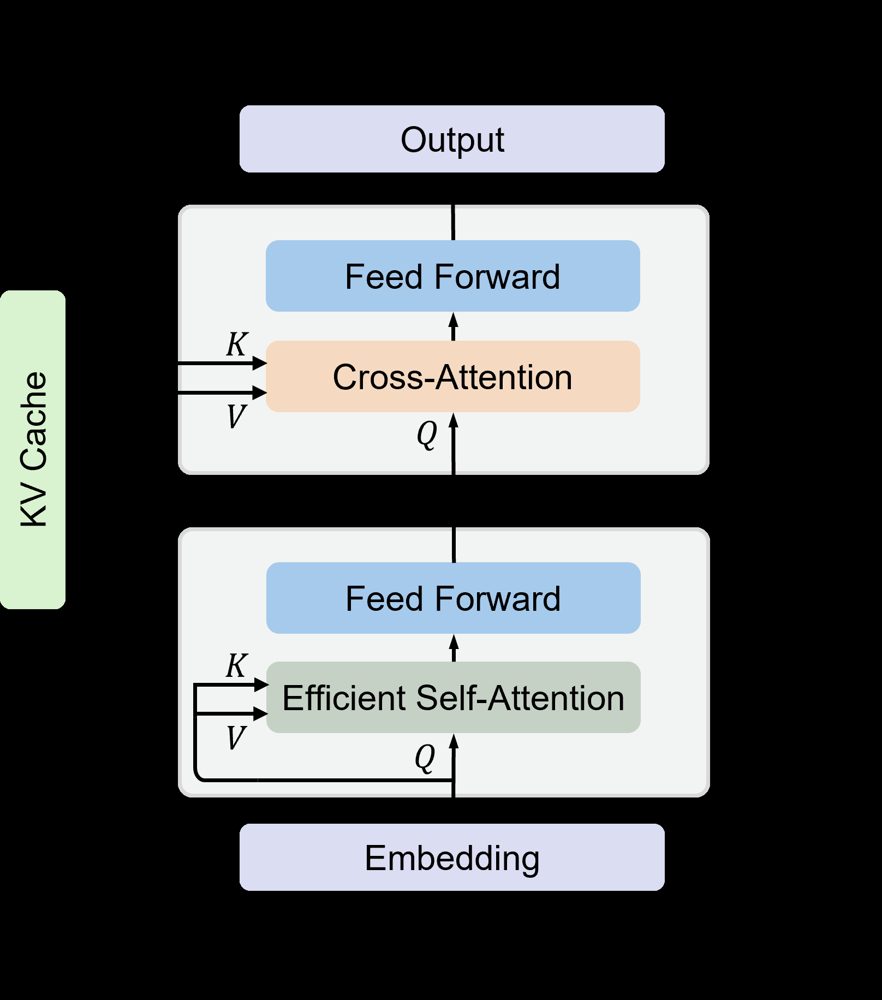

Decoder-only Transformer靠KV cache复用历史、避免重复编码，成了语言模型的事实标准。但服务token数一多，KV cache就吃掉大量显存，长输入的prefill也慢得惊人：一个65B模型（加上分组查询注意力与8比特KV量化）在512K token下要占约86GB显存，超过单张H100-80GB；在四张H100上，7B模型prefill 450K token要约110秒、1M长度要380秒。
YOCO（You Only Cache Once）提出decoder-decoder架构：self-decoder用高效自注意力只生成一份全局KV cache，cross-decoder用交叉注意力复用这份缓存，相当于把原来「每层都存一遍」的KV压缩成「只存一次」。KV cache的显存复杂度从O(LND) 降到O((N+L)D)，prefill复杂度从O(LN²D) 降到O(LND)，而且prefill阶段可以提前退出。
语言模型架构的探索大致有三条线索。一条是encoder-only，如BERT，对输入序列做双向编码；一条是encoder-decoder，如T5，用双向编码器处理输入、单向解码器生成输出；这两者在自回归生成上都吃亏，因为编码器必须把输入与已生成的输出重新编码一遍，encoder-decoder虽然只用解码器生成，但输出token没法充分利用编码器的参数，多轮对话时尤其明显。第三条是decoder-only，如GPT，靠缓存已算过的key/value向量在当前步复用，避免为每个token重新编码历史，推理速度大幅提升，也由此成为标准选择。
问题随服务规模放大。随着token数增长，KV cache会占据大量GPU显存，让大模型推理变成「显存受限」：以65B模型（加上分组查询注意力与8比特KV量化）为例，512K token占用约86GB显存，比一张H100-80GB的容量还大。另一方面，长序列输入的prefill延迟极高，用四张H100时，7B模型（加上Flash-Decoding与kernel融合）prefill 450K token要约110秒、1M长度要380秒。这两道门槛让长上下文模型很难真正部署。
YOCO的做法是把cross-decoder叠在self-decoder之上。给定输入序列，self-decoder先用高效自注意力得到KV cache，随后的cross-decoder层用交叉注意力复用这份共享缓存。它概念上接近encoder-decoder，但从外部看整体行为更像decoder-only，因此天然适配语言模型这类自回归任务。
这样带来三方面好处：只缓存一次，KV cache的显存占用显著下降；计算流允许prefill在进入self-decoder之前提前退出，prefill阶段被大幅加速；分布式长序列训练的系统设计也更高效。此外论文为self-decoder提出gated retention，在retention上加了数据控制的门控机制。
论文给出的实测收益相当直观：65B模型的KV cache内存可减少约80倍；即使是3B模型，整体推理内存在32K token时减少两倍、1M时减少九倍以上；prefill在1M上下文加速71.8倍、32K输入加速2.87倍，512K上下文下把Transformer的prefill延迟从180秒压到不足6秒。训练侧，3B模型扩到万亿级token后与StableLM这类主流Transformer模型表现相当，160M到13B的scaling曲线也具竞争力，上下文扩展到1M时needle检索几乎全中。

YOCO由两部分组成：self-decoder与cross-decoder。整个模型堆叠L个block，前L/2层是self-decoder，其余是cross-decoder。输入序列的嵌入打包成矩阵后，先由self-decoder逐层得到上下文表示，其第L/2层的输出被用来产生供cross-decoder使用的全局K、V；cross-decoder再逐层结合这份共享缓存得到最终输出。两部分都使用因果掩码。
两者的block布局与标准Transformer类似（注意力与前馈网络交替），同样带pre-RMSNorm、SwiGLU与分组查询注意力，差别只在注意力模块：self-decoder用高效自注意力（例如滑动窗口注意力），cross-decoder则用全局交叉注意力去读取self-decoder产出的共享KV缓存。

2.1 Self-Decoder。每层由高效自注意力与前馈网络构成，归一化用RMSNorm，注意力施加因果掩码。这个模块的关键性质是推理内存为O(1)，也就是KV cache数量恒定：例如滑动窗口注意力的缓存大小只取决于窗口大小，而与输入长度无关。论文在第3节讨论gated retention等更具体的设计选择。
2.2 Cross-Decoder。self-decoder的输出先经归一化与两组线性权重投影出全局的K和V，随后所有L/2个cross-decoder层共用这一份K、V：每层用自己的query权重产生Q，做标准多头注意力、加残差，再过SwiGLU前馈与残差得到输出。交叉注意力同样使用因果掩码，并且兼容分组查询注意力，可以进一步节省KV cache显存。得到最终输出后，由softmax分类器完成下一token预测。
2.3推理优势。由于全局KV cache被复用、高效自注意力又只需要常量级缓存，缓存数量约为O(N+CL)，其中N是输入长度、C是常量（例如滑动窗口大小）、L是层数；长序列下CL远小于N，于是大约只需O(N) 个缓存，这正是「只缓存一次」的含义。相比之下，Transformer解码器在推理时要把N×L份key/value全部存下来，所以YOCO大约省下L倍显存。当推理容量瓶颈落在KV cache上时，这意味着同样的显存能服务多得多的token，更大的批大小也能进一步抬高吞吐。
prefill侧的加速来自计算依赖关系：cross-decoder复用self-decoder的输出，所以prefill可以在进入cross-decoder之前提前退出、且不改变最终结果。这带来两层收益：只需一半层做前向，至少减半prefill延迟；self-decoder的高效注意力本身很快。以512K上下文为例，prefill延迟从180秒（Transformer配上Flash-Decoding与kernel融合这类优化）降到不足6秒；即便是32K长度，也有约三倍的prefill加速。
| KV cache显存复杂度 | Prefill时间复杂度 | |
|---|---|---|
| Transformer | O(LND) | O(LN²D) |
| YOCO | O((N+L)D) | O(LND) |
self-decoder可以换成各种高效自注意力方法。只要模块只需要常量级推理内存，self-decoder的缓存复杂度就只取决于层数；而好的模块选择还能同时改善训练与部署成本。论文采用两种：gated retention与滑动窗口注意力。
gated retention（简称gRet，也叫gRetNet或RetNet-3）是在retention上增加数据相关门控的版本，能同时做到训练可并行、效果好、推理成本低，也是实验中的默认选择。它把并行、循环、分块循环三种计算范式统一起来：三者等价、结果相同；训练通常用并行或分块循环，推理则用循环范式来获得常量KV内存。
并行表示下，Q、K、V由输入做线性变换得到，其中Q、K还带上位置相位（第n个位置的相位为e的i·n·θ 次方），门控由输入经sigmoid后开1/τ 次方得到；输出写成（Q乘K的转置、逐元素乘上因果衰减矩阵）再乘V，衰减矩阵在n≥m时保留、否则置零。温度项鼓励门控值趋近1以获得更好的记忆能力；而这个数据控制的衰减是按head而不是逐元素施加的，目的是让计算能充分利用NVIDIA tensor core。
循环表示与并行表示等价：对第n个时间步，先更新中间状态（前一步状态按门控衰减后，加上当前步的K转置乘V），再用当前Q乘该状态得到输出。自回归推理时，self-decoder只需要维护这个中间状态，就得到常量级的KV内存。
分块循环表示是前两者的统一写法：给定块大小B，逐块计算，输出分成块内与跨块两部分；跨块部分靠一个块级中间状态在块之间传递，门控衰减被汇总成一个系数。论文在附录里证明了三种表示的等价性。它的好处是兼取两者之长：相比完全并行计算更省FLOPs，相比循环计算迭代更少，因此在训练与prefill阶段都能提升吞吐、降低显存。
多头版本与多头注意力、多尺度retention一致：每个头各自做gated retention，把各头输出拼接后做GroupNorm归一化，再过swish门与输出投影，以增加非线性。
滑动窗口注意力把每个token的注意力范围限制在固定窗口C内，而原始Transformer解码器会关注此前所有token。推理时的KV cache内存复杂度因此从O(N) 降到O(C)，也就是内存占用恒定、不随序列长度增长。它的计算方式与多头自注意力一致，只是注意力分数上叠加了一个掩码矩阵：窗口内的位置为0、窗口外为负无穷，从而使窗口外的位置在softmax后权重为零。
参考：https://arxiv.org/html/2405.05254v2